P2P vs. IP Multicast: Simulation Results
Stream Characteristics
Channel bit-rate: 500 kbps (505600 bps with transport overhead, w/o control overhead)
Media: simulated MPEG stream with a GOP having:
- I-to-I distance: 9
- I-to-P distance: 3
- GOP sequence: I-B-B-P-B-B-P-B-B
Playback rate: 25 frames / second (1 GOP / 360 ms)
Streaming Mechanisms
Multicast channels:
- Push streaming: 1 multicast group / channel (connectionless, no congestion control)
Unicast channels:
- Single-Tree (S-Tree): application-level multicast push streaming, 1 tree / channel, connectionless, no congestion control (500 kbps / tree)
- Multiple-Tree (M-Tree): application-level multicast push streaming, connectionless, no congestion control:
- M-Tree 3-3 layers: 3 trees (layers) / channel, 3 layers required* to start playback (166 kbps / tree)
- M-Tree 6-6 layers: 6 trees (layers) / channel, 6 layers required to start playback (83 kbps / tree)
- M-Tree 9-9 layers: 9 trees (layers) / channel, 9 layers required to start playback (55 kbps / tree)
- M-Tree 9-3 layers: 9 trees (layers) / channel, 3 layers required to start playback (55 kbps / tree)
- M-Tree 9-6 layers: 9 trees (layers) / channel, 6 layers required to start playback (55 kbps / tree)
- Mesh (Coolstreaming): TO DO
*By required layer, we mean a layer that has received a minimum number of frames in it associated playback buffer, such that the layer is no longer in a buffering state (see buffer characteristics below).
Layer frames are not transmitted in parallel, but are interleaved at a GOP level:
| Frame no |
01 |
02 |
03 |
04 |
05 |
06 |
07 |
08 |
09 |
10 |
11 |
12 |
13 |
14 |
15 |
16 |
17 |
18 |
19 |
20 |
21 |
22 |
23 |
24 |
25 |
26 |
27 |
| Frame type |
I |
B |
B |
P |
B |
B |
P |
B |
B |
I |
B |
B |
P |
B |
B |
P |
B |
B |
I |
B |
B |
P |
B |
B |
P |
B |
B |
| Layer 1 |
X |
X |
X |
X |
X |
X |
X |
X |
X |
|
|
|
|
|
|
|
|
|
|
|
|
|
|
|
|
|
|
| Layer 2 |
|
|
|
|
|
|
|
|
|
X |
X |
X |
X |
X |
X |
X |
X |
X |
|
|
|
|
|
|
|
|
|
| Layer 3 |
|
|
|
|
|
|
|
|
|
|
|
|
|
|
|
|
|
|
X |
X |
X |
X |
X |
X |
X |
X |
X |
Bandwidth Characteristics
Peer have the following uplink bandwidh assigments:
| Fraction of peers |
15 % |
20 % |
50 % |
15 % |
| Uplink bandwidth |
256 kbps |
640 kbps |
1 Mbps |
1 Mbps |
| Downlink bandwidth |
1 Mbps |
1 Mbps |
6 Mbps |
10 Mbps |
All other links in the simulated topology have 1 Gbps. There is no additional traffic.
Playback Buffer Characteristics
A playback buffer has two states:
- A buffering state, when frames are added and read from the buffer, but the buffer current frame position is not advancing (playback is stopped);
- A play state, when frames are added and read from the buffer, and the buffer current frame position is advancing at the playback rate (playback is started).
The playback buffer is described by the following parameters:
- Buffer size (in frames);
- Buffer history size, the maximum number of frames older than the current frame that are kept in the buffer;
- Buffering size, the minimum number of frames required in the buffer for the buffer to switch from the buffering to the play state.
For full-rate push streaming mechanisms (multicast and S-tree):
- Buffer size: 100 frames
- Buffer history size: 25 frames (almost 3 GOPs)
- Buffering size: 25 frames (almost 3 GOPs)
For part-rate push streaming mechanisms (M-tree), the buffer for each tree (layer) is nearly-independent and only with some common elements (such as advancing the playback position):
- Buffer size/layer: 35 frames (1/3 of full-rate buffer)
- Buffer history size: 9 frames (1 GOP)
- Buffering size: 9 frames (1 GOP - minimum to ensure that received frames can be decoded)
For mesh: TO DO
Results
Network data
Bandwidth utilization
Comparison between analytical model and simulation
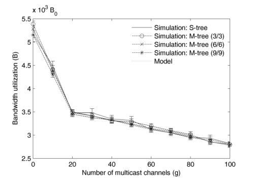
Multicast entries
Comparison between analytical model and simulatio for all entries (PIM-SM and IGMP) and core router entries (PIM-SM).
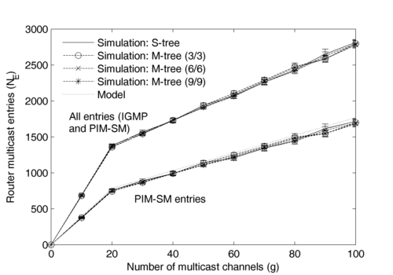
Efficiency of the P2P network
Simulation results with the ratio between client upload and download. Illustrates the efficiency of various P2P streaming configurations. The following implementation details apply:
- For push-streaming:
- Peers register to a tracker server when they can serve a particular channel (S-tree) or layer (M-tree); the moment of registration is the moment when the buffering state finishes (for the channel or layer) plus an additional guard period of 10 seconds to eliminate short-lived peers;
- Peers deregister for a particular channel or layer, when the associated buffer is no longer in play state;
- Peers measure their uplink bandwidth utilization and accept a new receiver only if they have available k-times the necessary bandwidth where k=1.5 (e.g. for S-tree a peer must have 1.5 x 500 kbps available to accept a new receiver, for M-tree with 3 layers a peer must have 1.5 x 166 kbps available to accept a new receiver);
- Peers use two methods to measure uplink bandwidh utilization:
- Static-mode: peers keep track of the number of receiver and allocated bandwidth; this mode does not measure the overhead or 3-rd party traffic;
- Dynamic mode: peers use their link meter (a counter implemented by every network link) that give an exponential weighted moving average of the link utilization for each flow direction with a smooth factor of 0.9;
- For the current result, we have used the static mode because it is more accurate when there is no additional traffic. The dynamic mode is similar in over 99% of the sessions, but it responds slightly slower to the actual changes of link utilization.
- Sender peers only notify their receivers when leaving the channel.
- Receiver peers use the tracker server to fetch a list of maximum 5 neighbor peers that can be senders. If none of the returned neighbors can serve as senders, the receiver peers will automatically use the streaming server.
- Receiver peers only change their sender peer (for a channel or layer) when there is no frame received for a buffer timeout period of 2 seconds (i.e. if a peer connects to the server it will remain connected for the duration of the session).
- Receiver peer always notify their sender or senders when leaving the channel.
- For pull-streaming: TO DO
The multiple-tree streaming exhibits a superior efficiency in using the P2P streaming due to the finer granularity of bandwidth requirements. The disadvantages are:
- lower overall quality (due to using peers instead of the server) - see quality results;
- higher delay (due to the buffering delays for interleaved multiple layers) - see delay results;
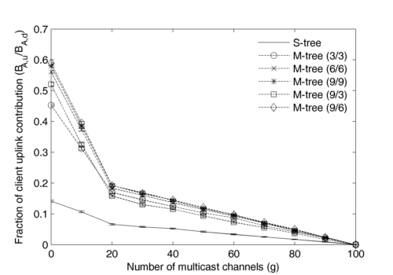
Streaming data
Playback quality
The playback quality is the ratio: decoded frames / played frames. Due to this definition, the quality does not measure the session characteristic for the instances when the playback is stopped. These are:
- The initial setup period; this is measured through the setup delay;
- The playback pause periods; these are measured through the wait delay.
- For S-tree, a peer enters a pause period when the buffer is no longer in the ready state (no frame received for the buffer timeout period of 2 seconds).
- For M-tree, a peer enters a pause period when the layer buffers in the ready state is less than the minimum required (e.g. 3 layers for M-tree 9-3).
The stream quality is high (> 0.99) because:
- the system manages the bandwidth constraints by measuring the available at peers;
- when peer bandwidth is not available, the peers use the server;
- there is no 3rd party traffic to generate bottlenecks and losses;
- except for the access network, the core and server links are overprovisoned;
- the only packet losses are due to channel change peer churn.
The quality decreases slighly when increasing the number of layers because:
- more peers are used (e.g. when g = 0, for M-tree 9/9 almost 60% of the downloaded streaming traffic is uploaded by peers versus S-tree where only 15% is uploaded by peers and the rest by the server - see the efficiency of the P2P network)
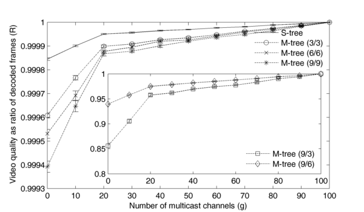
This figure shows the average quality for each type of streaming.
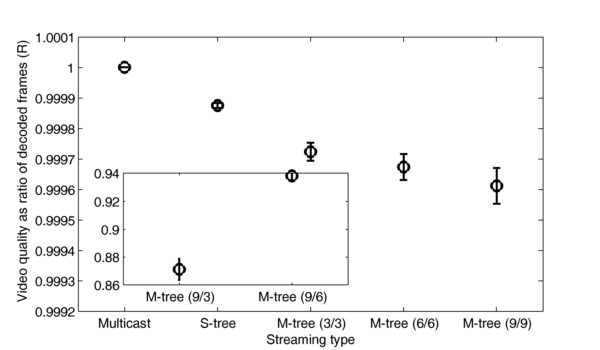
Session Delays
Each streaming session has the following moments, in order:
- session start time: Tstart
- time when the first stream packet is received: Trecv
- playback start time: Tplay
- finish time: Tfinish
By considering this time instances, we can have the following delays:
- setup delay: Dsetup = Tplay - Tstart
- bootstrap delay: Dbootstrap = Trecv - Tstart
- buffering delay: Dbuffer = Tplay - Trecv
Setup delay
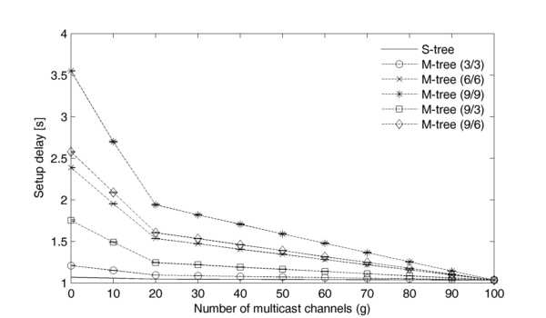
Bootstrap delay
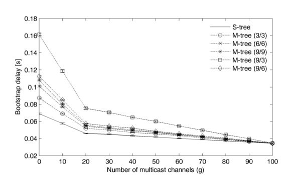
Buffering delay
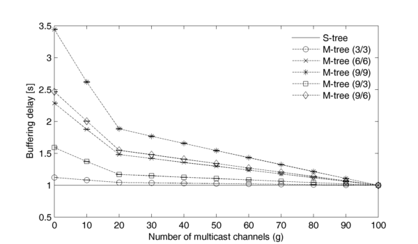
Average values for delay components for each streaming type
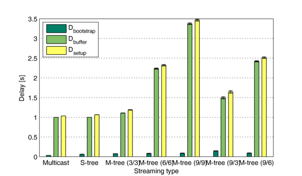
Synchronization delay
In addition to the session delay there exists a sync delay, which is the time difference between the moment when a frame is played at the receiver and the moment the frame was transmitted at the media server.
This delay measures the network (transmission, queing, forwarding, etc) delay that streaming packets take from the server to each final destination plus the buffering delay at the final destination minus a small amount*.
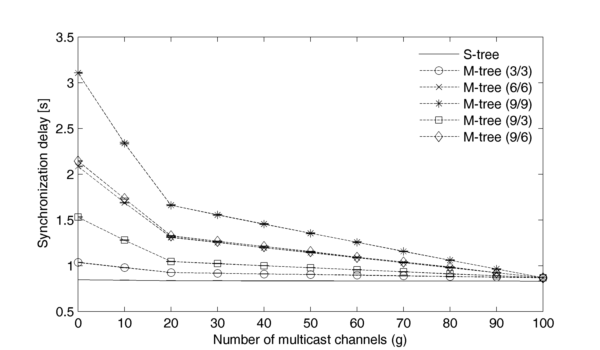
*When playback is starting at the moment the buffer (or buffers for multiple layers) goes from buffering to play state, the client will not start playback with the first frame in the buffer, but rather, it will look for the first frame that can be decoded, usually an I frame skipping several frames. Depending on the position of the first I frame with respect to the beginning of the buffer the actual sync delay will be smaller.
Example: In the figure above, the sync delay for S-tree scenario and all channels multicast (g = 100), the sync delay is 830 ms. This value comes from:
- A buffering delay of 25 frames: Tbuffering = 25 x 40 ms = 1000 ms.
- Minus the delay due to the jump to the first I frame. If we assume the first I frame uniformly distributed over the first 9 frames (1 GOP), then the average distance to the first I frame is 4.5 x 40 ms = 180 ms.
This gives us a sync delay of 820 ms. The rest of 10 ms is the network delay for the packet to each the client starting from the server.
Flow Congestion Control
Scenario 1
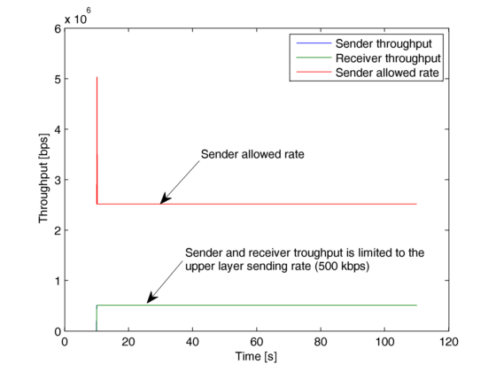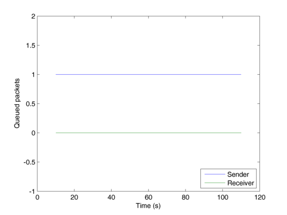 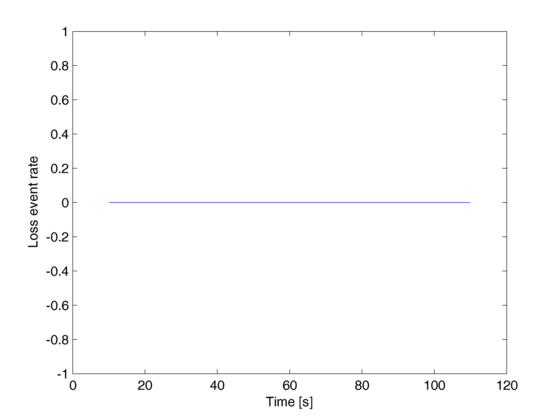
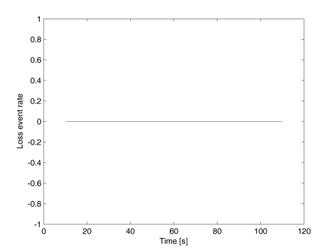
Scenario 2
 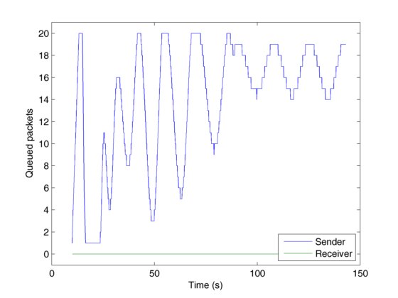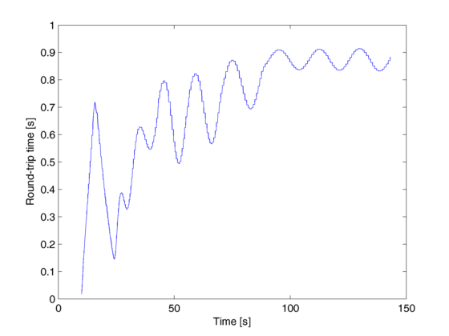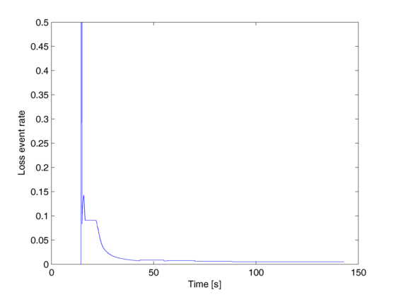
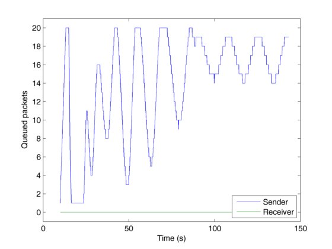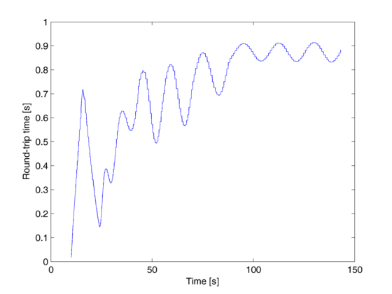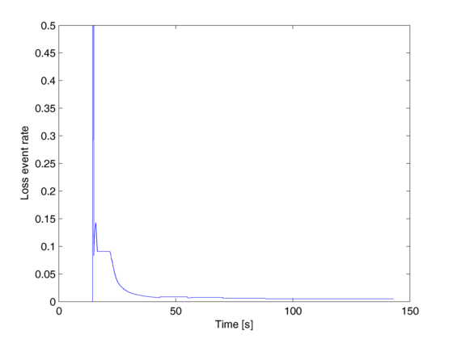
Scenario 3
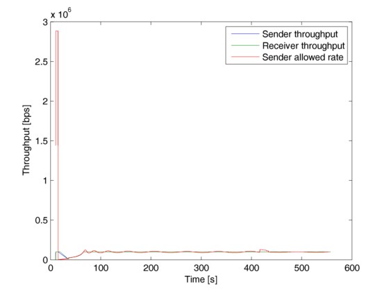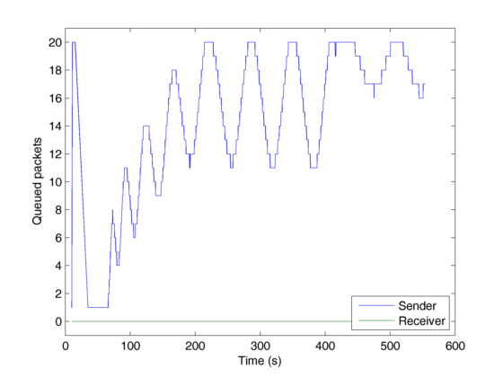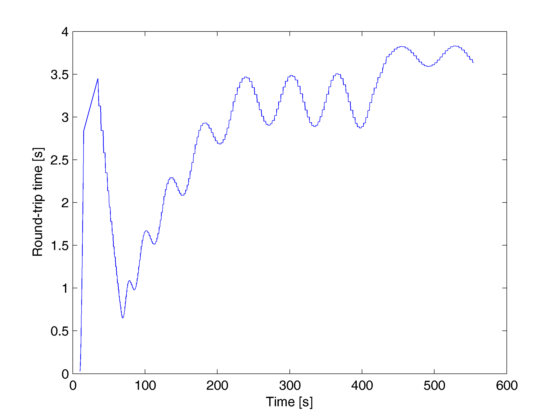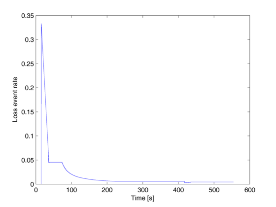
Scenario 4
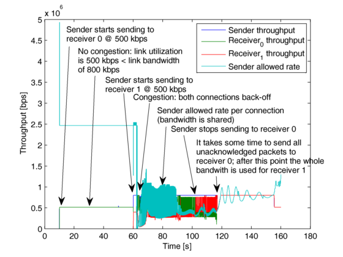 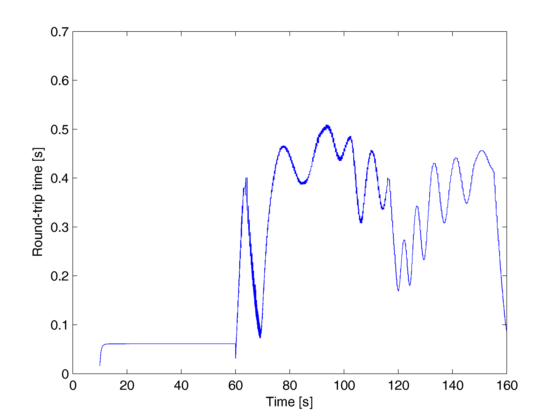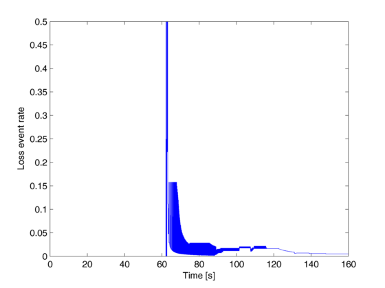
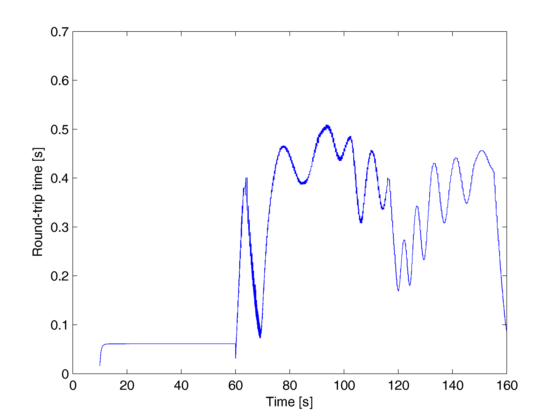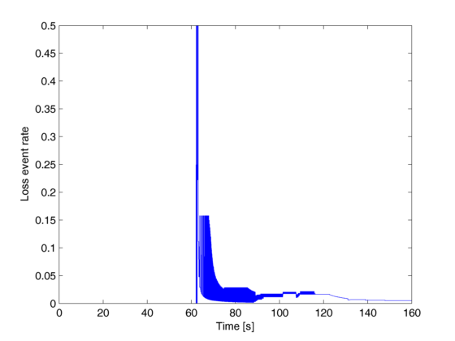